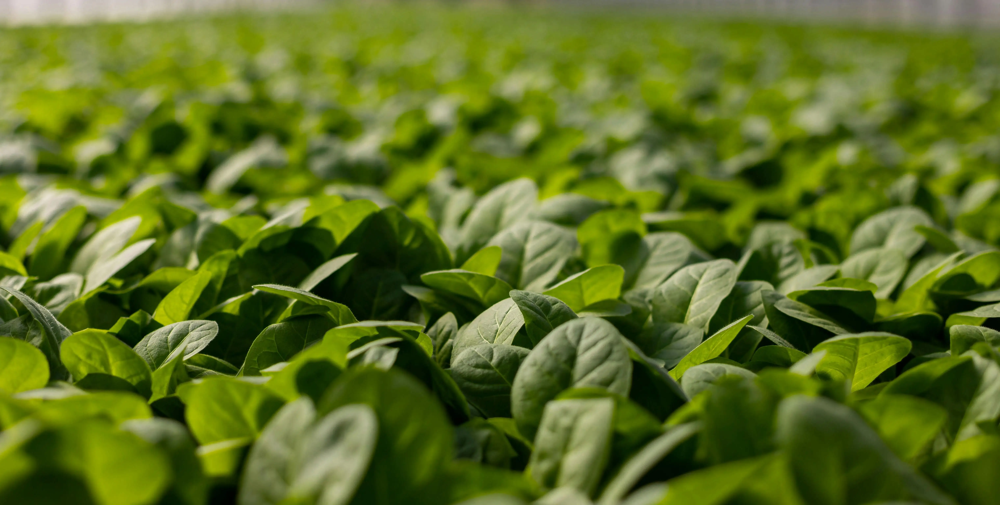
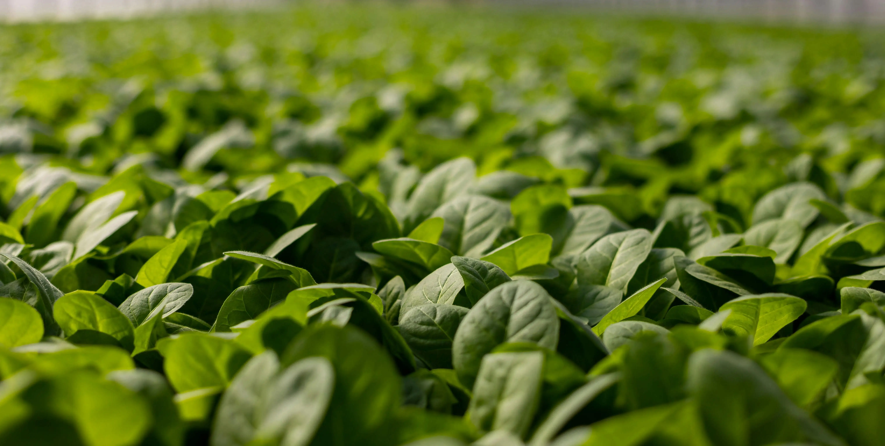

Who We Are
Land Information Management System(LIMS) is a dynamic team of seasoned professionals, united by a strong commitment to transforming food security. Our experts come from diverse fields—ranging from human resource development and agronomy to data science, remote sensing, and software engineering. With this multidisciplinary strength and a shared vision, we create innovative solutions that empower farmers, agronomists, and stakeholders alike. Together, we’re not just solving problems—we’re driving meaningful change in agriculture and beyond.
What We Do
Disaster Risk Reduction
Proactive strategies to minimize disaster impact and build community resilience
Geospatial Land Mapping
Comprehensive land surveying and mapping using advanced GIS technology
Real-time Monitoring
24/7 surveillance systems for immediate threat detection and alerts
Recovery Planning
Strategic reconstruction and rehabilitation programs for affected areas
Agricultural Assessment
Crop monitoring and land utilization analysis for sustainable development
Decision Support
Data-driven insights and recommendations for informed governance
Ready to Get Started?
Join the platform that's revolutionizing agricultural disaster management in Pakistan